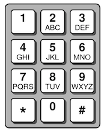

In ancient times, the interface of a phone consisted of a simple numeric keypad where each key was used for both digits and letters. Here is an old-school keypad labeled with the standard number-to-letter mappings.

Mapping 26 letters to 10 keys means each digit key did multi-duty for more than one letter. A variety of janky mechanisms were used to indicate which of the letters was intended; some interfaces were rather annoying (tap '2' once for A, twice for B, thrice for C, …); the more clever algorithms operated on a single tap and tried to infer which letter was intended based on context. One of these algorithms was Tegic T9 (which stands for Text on 9 keys), a predictive algorithm that guesses the intended letter by looking for sequences that form valid English words.
Let's work through an example to see how this algorithm works.
- The user taps the digit keys
6263. - On the keypad, the digit 6 maps to the set of potential letters {
M,N,O}, the digit 2 to {A,B,C} and the digit 3 to {D,E,F}. - The user's sequence has four digits and three letter choices per digit, leading to a total of
3*3*3*3 = 81possible letter sequences to explore. - The goal of the function is to recursively explore all of the possible letter sequences and gather those are valid English words.
- Visualize/sketch the tree corresponding to the recursive exploration of letter sequences. The first digit tapped was 6; the three possibilities for this digit are {
M,N,O}. The decision at the top of the tree has three branches: one to form words starting withM, one to form words starting withN, and one to form words words starting withO. - Having chosen
Mfor the first digit, the recursion moves deeper into the tree and at the second decision (letter for digit2) are three branches for {A,B,C}. This continues downward for the remaining two digits. The letter sequences recursively explored down theMbranch includeMAMD,MAME,MAMF,MBMD, and many others. However, only one of these sequences is an actual word in the English dictionary:MANE. When the recursion encounters this word, save it as a suggestion. - After unchoosing, the search will backtrack to try other choices and thereby explore other branches of the trees. When exploring sequences starting with
Nand then those starting withO, the search finds two other valid words:NAMEandOBOE, which are also added to the set. The complete set of suggestions predicted for6263are the words "mane," "name," and "oboe."
Your task
You are to write a function that use a T9-style prediction algorithm to suggest words that match a sequence of tapped digits. The function prototype is
void predict(string digits, Set<string>& suggestions, Lexicon& lex)
The function operates by recursively exploring all the possible letter sequences formed by the tapped digits and storing those sequences that are actual words in the set of suggestions.
The starter code declares a program-wide constant keypad that maps from digit to set of letters. This constant is declared outside of all functions and is accessible in program-wide scope. Take note of this very important distinction —keypad is a constant and not a global variable. Declaring variables in global scope is considered poor style and can lead to functional errors and debugging challenges. The CS106B style guide sets down a clear expectation that the global variables are never welcome in this course.
Q6. In your own words, identify the drawbacks to using global variables and explain why a program-wide constant like keypad does not suffer from the same drawbacks.
Notes
- Helper functions. The function
predictmust be implemented to exactly match the prototype above. You are free to decide the names and parameters of any additional helper/wrapper functions you use. You will almost certainly need at least one helper function. - English lexicon. The Stanford library includes
Lexicon, a special-purpose class to represent a word list. We also supply a lexicon data file containing a large list of English words. The sample code below demonstrates using aLexiconto lookup words and prefixes. For more details, see the Lexicon documentation.Lexicon lex("res/EnglishWords.txt"); // initialize lex with words from file if (lex.contains("oboe")) { // if oboe is on the word list // do something } if (lex.containsPrefix("ana")) { // if any words on list begin "ana... // do something else } - Pruning. The Lexicon
containsPrefixshould be used to prune dead-end searches. For example, if the digits tapped were7849and the letter sequence being explored thus far is "PV," there is no point in continuing down this path because there are no words in the lexicon that begin with that prefix. Pruning is most cleanly handled by adding a base case to detect a dead end and immediately returning without making further recursive calls. - Use of ADTs. You will use
Set,Map, andLexiconin solving this problem. As it can be expensive to make copies of large data structures, pass these variables by reference to allow efficient sharing without copying. Note that the Lexicon lookup is case-insensitive; in contrast, a Set does distinguish by case when comparing two strings. The words in the set of suggestions should be in all lower-case to match our expected result. - Efficiency. With a correct algorithm, effective pruning, and appropriate use of ADTs, finding predictions should be blindingly quick, finishing within a second or two.
- Valid digits. Your function may assume that the input will contain only digit characters that have assigned letters (e.g. only
2through9). Inputs such as0,1,#,*or any other character are illegal. You do not have to handle these other characters, and we will not test on such illegal inputs. - Testing. A simple way to add test cases of your own is to choose a word, convert it to tapped digits, pass those digits to predict, and be sure the original word is in the set of suggestions. Verify that the other suggested words also match the tapped digits.
- Assumptions. You may assume that the input digits contain only valid digit characters, that the suggestions set is empty to start, and that the Lexicon is a populated word list. The function adds to the suggestion set all letter sequences that are determined to be valid words, i.e. contained in the lexicon. If none are found, the suggestion set remains empty.
Extensions
- Error correction. The real-world T9 algorithm included a feature to recognize and correct typing/texting errors, by looking at neighboring keys on the keypad to correct typos. For example, the word "testing" is entered with the digit keys
8378464. If the user mistyped a2for the3and a9for the6, the mis-entered digits8278494match no words. Rather than report no suggestions in that case, the fancier search would instead find words that are near matches. It would suggest words such as "tasting" (8278464), "testing" (8378464), and "tapping" (8277464) that have corrected up to two typos in the entered digits. Finding near-match suggestions is a marvelous further application of your recursive superpowers. - Auto-complete. After tapping the initial sequence of few digits, recursion can be further applied to find ways to extend the sequence to form a valid word and to offer these auto-completions to the user. The search for possible auto-completions is similar to the basic T9 algorithm, with a few little tweaks. More practice to build your core strength with recursion!
- Other prediction/recognition tasks. Another cool recursive prediction algorithm is the "swipe-to-type" interface prevalent on modern cell phones. The same general prediction algorithm can be adapted to work for both T9 and swipe-to-type by configuring the set of possibilities for each user tap/gesture. Neat!